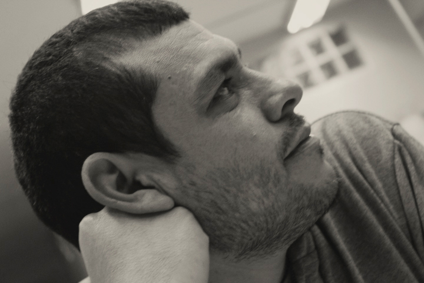
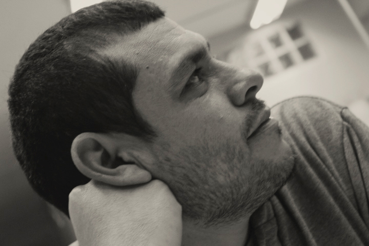

INICIO
OBRAS
ARTISTAS
NOSOTROS
CONTACTO
 

Richard Arévalo
Artista plástico visual, diseñador gráfico y diseñador de interiores. Nacido en Sullana residente en Lima - Perú. Egresado de la Escuela Superior Pública de Arte Ignacio Merino de Piura. Ha realizado Exposiciones individuales y exposiciones colectivas en el Perú y el extranjero. El papel transmuta en cuerpos, trozos de materia con vestigios de vida, de historias que se evidencian en palpables formaciones y deformaciones geométricas; el papel es traje, envoltorio, y al mismo tiempo simula ser la anatomía interior como una cartografía corporal a través de sus prominencias, relieves, contrastes, surcos, que se bifurcan mediante trazos con soltura de líneas trasluciendo ambigüedad de planos, marcas, símbolos y formas que comunican. La volumetría en el papel sacude las percepciones táctiles y visuales, volumetría basada en la unión de puntos y dobleces que buscan formas, texturas, trayendo a colación el origami el cual es el punto de partida para su proceso. Betún, óleo, carboncillos, acrílicos y técnicas variadas que evocan al papel como compositor que utilizan las manos para hacerse y ser.
EXPOSICIONES INDIVIDUALES
2020
MUNDO DE ABAJO, MUNDO DE ARRIBA, MUNDOS ACTUALES, Galería ICPNA San Miguel, Lima
2018
VESTIGIOS RADIOGRÁFICOS Galería Paradero Cultural, Lima
2017
RICHARD ARÉVALO Jose Antonio Art Gallery Barranco, Lima
2011
FACTORY Museo Vicus, Piura
2008
TRASCENDENCIA FÍSICA Museo Vicus, Piura
2003
LA DE-FUNCIÓN DE LA ALEGRÍA, Sullana
EXPOSICIONES INTERNACIONALES
2019
Exposición Itinerante “LOS HERALDOS NEGROS 100 años de SER” Escuela de
bellas artes Luciano Fortabat Azul, Argentina
2016
Exposición Itinerante “PEREGRINOS” Bruselas (Bélgica), Luxemburgo, Paris, Lille,
Agt.
2014
Exposición “GENERACIÓN” Maison d´ Amerique Latine, Strasbourg, Francia
2012
Exposición Galería Pequignett, Strasbourg, Francia
Exposición “Generación”, Atelier Juan Collantes, Dusseldorf, Alemania
Binacional de Artes Plásticas y Visuales Ecuador-Perú, Loja
Binacional de Artes Plásticas y Visuales Perú-Ecuador, Piura
EXPOSICIONES NACIONALES
2019
Exposición “ENTROPÍA GENERACIONAL” LAC galería, Barranco
Exposición “LOS HERALDOS NEGROS 100 años de SER” Galería Santa Rosa,
Sullana
Exposición ANTIFIL, Lima
Exposición “CARNICERÍA” Proyecto AMIL – San Isidro, Lima
2018
Exposición PARTO1095 Espacio la Sala Miraflores, Lima
Exposición ANTIFIL, Lima
2017
Exposición Colectiva “Ars longa, Vita Brevis” Galería José Antonio Barranco, Lima
2016
Exposición Colectiva - Seleccionado 1er Concurso de Dibujo “Dos Generaciones”
Galería John Harriman Miraflores, Lima
2015
Exposición Casa Museo Juan Parra del Riego “HOMENAJE A DOMINGO DE
RAMOS” Barranco
Exposición Galería González y González “DONDE MÁS DUELE” Barranco, Lima
Exposición ART LIMA Galería D21 Proyectos de Arte
2014
Exposición BIENAL DE ARTE ECOLÓGICO, Lima
Obra